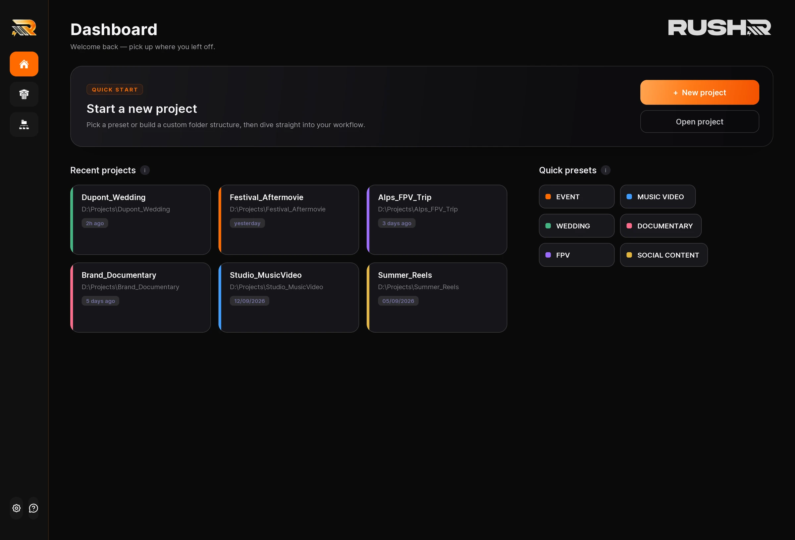
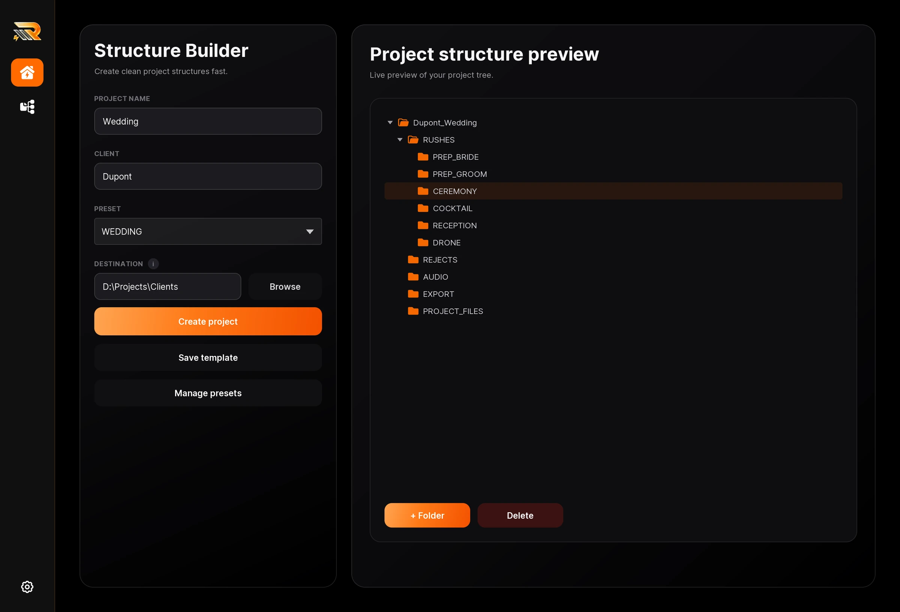

Démarrer avec Rushr, de l'installation au bouton Préparer
Rushr transforme une carte pleine de fichiers en un projet rangé, prêt à monter. Ce guide déroule tout le parcours : installer l'app, te connecter, créer la structure du projet, importer tes rushes, les trier au clavier, puis tout ranger d'un clic avec Préparer.
1Installer Rushr
Inscris-toi à la beta sur la page Rushr : tu reçois aussitôt un e-mail avec ta licence. Ensuite, sur la page de téléchargement, crée ton compte Backpack Lab avec la même adresse que ton inscription : ta licence s'y ajoute toute seule et la page te propose la bonne version.
Tout est inclus dans l'installeur, y compris le lecteur vidéo : tu n'as rien d'autre à installer.
Windows 10 et 11 (64 bits)
- Lance
Rushr_win_beta_….exe. - Si Windows affiche « Windows a protégé votre ordinateur », clique sur Informations complémentaires puis Exécuter quand même. L'app n'est pas encore signée numériquement pendant la beta.
- Rushr s'installe et s'ouvre tout seul.
macOS 12 ou plus récent
- Rushr pour Mac fonctionne sur les Mac Apple Silicon (M1 ou plus récent).
- Ouvre
Rushr_osx_beta_….pkget suis l'installeur. - Si macOS indique qu'il ne peut pas vérifier l'app : Réglages Système › Confidentialité et sécurité, puis Ouvrir quand même.
2Te connecter
Au premier lancement, Rushr te demande de te connecter avec ton compte Backpack Lab : e-mail et mot de passe, Google ou Microsoft. Utilise le même compte que sur le site : ta licence s'active toute seule, il n'y a aucune clé à saisir.
- Si la double authentification est activée sur ton compte, Rushr te demande le code reçu par e-mail.
- Ta licence est liée à un appareil. Pour changer d'ordinateur, connecte-toi sur le nouveau : Rushr te demande de confirmer avec un code par e-mail, puis propose de libérer l'ancien. Tu retrouves tes appareils dans Mon compte.
- Ensuite, Rushr fonctionne hors ligne. Il lui faut juste internet de temps en temps pour renouveler la licence (jusqu'à 30 jours sans connexion).
3Créer la structure du projet
Tout part d'une arborescence de dossiers propre, créée avant de toucher au moindre fichier. Depuis le Tableau de bord :
- choisis un préréglage rapide (Event, Wedding, Music video, Documentary, FPV, Social content), ou
- clique sur ＋ Nouveau projet pour ouvrir l'écran Création du projet.

Dans Création du projet, renseigne le nom du projet, le client, le préréglage et la destination (le disque ou dossier où créer le projet). À droite, l'aperçu montre l'arborescence que tu peux modifier : ＋ Dossier pour ajouter, Supprimer pour retirer, F2 pour renommer.
Deux dossiers comptent particulièrement :
Clique sur Créer le projet, puis sur Continuer vers le gestionnaire de rushes →.
Astuce : une structure que tu réutilises souvent ? Enregistrer le modèle la garde comme préréglage personnel, et Gérer les préréglages permet de la modifier ou de la supprimer.

4Importer tes rushes
Dans le Gestionnaire de rushes, clique sur Importer un dossier (ou Ctrl + I) et choisis le dossier de ta carte ou de ton disque. Tu peux en importer plusieurs : chaque sous-dossier garde sa propre section (par exemple CAM_A · 10 clips), pour ne jamais mélanger les sources.
Rushr génère les vignettes et lit les infos de chaque fichier (résolution, durée, codec, images par seconde). Formats pris en charge : MP4, MOV, MXF, AVI, MKV, MTS et M2TS.
- Vue grille ou vue liste avec les boutons en haut à gauche.
- Filtre pour n'afficher qu'une catégorie, et recherche par nom de fichier.
- Le pied de liste compte en direct les rushes importés, étiquetés, rejetés et restants.
Rushr ne modifie jamais tes fichiers à l'import : il les lit là où ils sont. Rien n'est envoyé en ligne.
5Trier et taguer au clavier
Clique sur un clip : il s'affiche dans l'Aperçu à droite. Espace lance ou met en pause la lecture, ← et → passent au clip précédent ou suivant. Puis donne-lui une catégorie :
- Les catégories sont les sous-dossiers de
RUSHES. Chacune reçoit une touche de 1 à 9, dans l'ordre des pastilles du panneau Catégories. - 1…9 : tague le ou les clips sélectionnés avec la catégorie correspondante.
- Suppr : marque la prise en REJECT (elle ira dans
REJECTS). - Échap : retire le tag.
- Tu peux aussi cliquer directement sur une pastille de catégorie.
Pour aller plus vite, tague plusieurs clips d'un coup : Ctrl + clic ou Maj + clic pour ajouter à la sélection, Ctrl + A pour tout sélectionner, même sur plusieurs sections.
Ajouter ou modifier des catégories
Tape un nom dans Nouvelle catégorie… puis Ajouter : Rushr crée le dossier correspondant dans RUSHES. L'icône d'engrenage ouvre Gérer les catégories pour les renommer, changer leur couleur ou les retirer. Si une catégorie contient des sous-dossiers, survole sa pastille pour taguer directement dans l'un d'eux.

6Préparer : tout ranger d'un clic
Quand le tri est fait, clique sur Préparer (ou Ctrl + Entrée). Rushr range chaque prise taguée dans le dossier de sa catégorie sous RUSHES, et les rejets dans REJECTS.
- Avant de commencer, il vérifie qu'il y a assez de place sur le disque de destination.
- Pendant le transfert, la barre de statut affiche l'avancement et le débit en direct.
- Chaque fichier est vérifié par rapport à l'original avant d'être compté comme fait. Chaque passage ajoute un relevé de vérification (ASC MHL) et un rapport PDF par catégorie dans un dossier
ascmhlà la racine deRUSHES. - Tu as mal tagué ? Change le tag et relance Préparer : le fichier est déplacé vers son nouveau dossier, sans doublon.
Copie ou déplacement
Par défaut, Rushr travaille en mode Copie : tes originaux restent intacts sur la carte ou le disque source. Le mode Déplacement transfère les fichiers au lieu de les dupliquer ; l'original n'est supprimé qu'une fois la copie vérifiée. Le mode actif s'affiche en haut à droite du gestionnaire (« Mode : Copie ») et se change dans Paramètres › Gestion des fichiers › Mode de transfert.
Envoyer vers ton logiciel de montage
Les dossiers rangés s'importent dans Premiere Pro, DaVinci Resolve, Final Cut Pro ou n'importe quel logiciel. Coche en plus Exporter XML à côté de Préparer pour que Rushr crée un fichier qui reconstruit tes chutiers à l'identique :
- DaVinci Resolve : Fichier › Importer le fichier
.xml. Dans Paramètres › Gestion des fichiers, tu peux aussi choisir un script Resolve, ou Envoyer vers Resolve pour importer les chutiers directement dans le projet ouvert (Python 3 64 bits requis). - Premiere Pro : Fichier › Importer le même fichier
.xml.
7Enregistrer et rouvrir le projet
Ctrl + S enregistre le projet dans un fichier .rshr : structure, catégories, tags et liste des rushes. Rushr enregistre aussi automatiquement toutes les 5 minutes par défaut (réglable dans les Paramètres).
Pour reprendre ton travail, double-clique sur le fichier .rshr, ouvre-le depuis Ouvrir un projet, ou clique dessus dans les Projets récents du Tableau de bord : tu retrouves tout exactement là où tu l'avais laissé.
Mises à jour : Rushr vérifie les nouvelles versions à chaque démarrage. Un clic suffit pour télécharger, installer et redémarrer. Certaines mises à jour importantes peuvent être obligatoires.
Tous les raccourcis clavier
| Raccourci | Action |
|---|---|
| 1 … 9 | Taguer la sélection avec la catégorie 1 à 9 |
| Suppr | Marquer le clip en REJECT |
| Échap | Retirer le tag de la sélection |
| Espace | Lecture / pause de l'aperçu |
| ← → | Clip précédent / suivant |
| Ctrl / Maj + clic | Ajouter des clips à la sélection |
| Ctrl + A | Tout sélectionner |
| Ctrl + I | Importer un dossier |
| Ctrl + Entrée | Préparer les rushes tagués |
| Ctrl + S | Enregistrer le projet |
| Ctrl + Maj + S | Enregistrer sous |
| Ctrl + N / Ctrl + O | Nouveau projet / ouvrir un projet |
| Ctrl + Suppr | Vider la liste des rushes |
| F2 | Renommer un dossier (Création du projet) |
Sur Mac, les raccourcis utilisent aussi la touche control (pas ⌘), et Suppr correspond à fn + ⌫. Tous les raccourcis sont aussi listés dans l'app, dans Paramètres › Aide.
Besoin d'aide ?
Un bug, une question ou une idée ? Le bouton Feedback dans Rushr envoie ton message avec une capture d'écran. La communauté et l'équipe répondent aussi sur le Discord, et la page Support rassemble la FAQ.
Rejoindre le Discord Télécharger Rushr